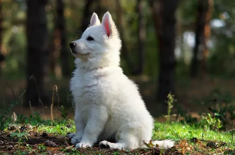
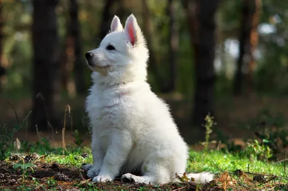

Моя собака - представитель породы белая швейцарская овчарка. Они известны своей выносливостью, умом и отличной подходчивостью к тренировкам.
Белые швейцарские овчарки очень любят детей и являются отличными сторожевыми собаками.
Более подробную информацию о белых швейцарских овчарках вы можете найти на странице в Википедии.